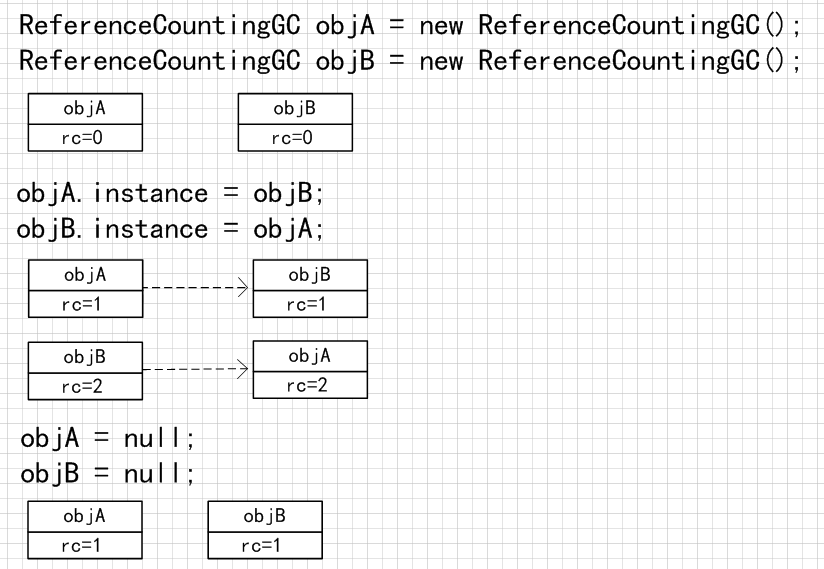

在判断对象是否存活时，引用计数算法的做法是：给对象中添加一个引用计数器，每当有一个地方引用它时，计数器值就加1；当引用失效时，计数器值就减1；任何时刻计数器为0的对象就是不可能再被使用的。
引用计数算法（Reference Counting）的实现简单，判定效率也很高，在大部分情况下时一个不错的算法，也有一些比较著名的案例，例如MS的COM(Component Object Model)技术、使用ActionScript3的FlashPlayer、Python语言和在游戏脚本领域被广泛应用的Squirrel中都使用了引用计数算法进行内存管理。但是，主流的Java虚拟机里面没有选用计数算法来管理内存，主要原因就是他很难解决对象之间相互循环引用的问题。例如以下代码：
public class ReferenceCountingGC { public Object instance = null; private static final int _1MB = 1024 * 1024; private byte[] bigSize = new byte[2 * _1MB]; public static void testGC(){ ReferenceCountingGC objA = new ReferenceCountingGC(); ReferenceCountingGC objB = new ReferenceCountingGC(); objA.instance = objB; objB.instance = objA; objA = null; objB = null; System.gc(); } }
|

当执行到objA.instance = objB时,此时objA虽然没被引用，但objA对属性instance的引用使得objA的引用计数已经+1。执行完objB.instance = objA后，objA和objB的引用计数均为2.
当objA和objB都赋值为空后，两个对象的引用计数均减1，但是引用计数仍然不为0，所以虽然这两个对象再无任何引用，也就是说这两个对象已经不再可能被访问，若虚拟机采用的是计数算法，还是无法通知GC收集器回收它们。
在运行参数中加入：-XX:+PrintGCDetails。查看运行结果：
[GC (System.gc()) [PSYoungGen: 8028K->480K(76288K)] 8028K->488K(251392K), 0.0009484 secs] [Times: user=0.00 sys=0.00, real=0.00 secs] [Full GC (System.gc()) [PSYoungGen: 480K->0K(76288K)] [ParOldGen: 8K->395K(175104K)] 488K->395K(251392K), [Metaspace: 3093K->3093K(1056768K)], 0.0047382 secs] [Times: user=0.01 sys=0.00, real=0.01 secs] Heap PSYoungGen total 76288K, used 1966K [0x000000076ab00000, 0x0000000770000000, 0x00000007c0000000) eden space 65536K, 3% used [0x000000076ab00000,0x000000076aceba30,0x000000076eb00000) from space 10752K, 0% used [0x000000076eb00000,0x000000076eb00000,0x000000076f580000) to space 10752K, 0% used [0x000000076f580000,0x000000076f580000,0x0000000770000000) ParOldGen total 175104K, used 395K [0x00000006c0000000, 0x00000006cab00000, 0x000000076ab00000) object space 175104K, 0% used [0x00000006c0000000,0x00000006c0062ee8,0x00000006cab00000) Metaspace used 3110K, capacity 4494K, committed 4864K, reserved 1056768K class space used 348K, capacity 386K, committed 512K, reserved 1048576K
|
从GC日志中可以清楚地看出，“8028K->488K(251392K)”和“480K->0K(76288K)”意味着虚拟机并没有因为两个对象互相引用就不回收它们，这也说明虚拟机并不是通过引用计数算法来判断对象是否存活的。